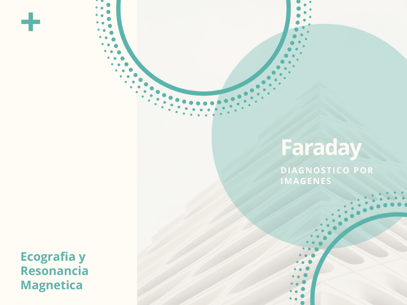

Inicio
Quienes somos
Profesionales
Equipamiento
Turnos
Galeria de imagenes
Dr. Gervasio Sasia - Diagnostico por imagenes
Dr. Martin Zorzon - Diagnostico por imagenes
Dr. Camilo Errecalde - Diagnostico por imagenes